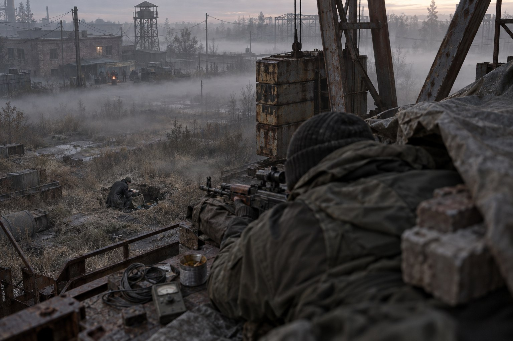
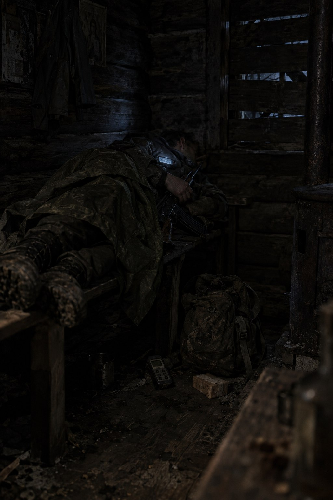

Справа № 1СмітникД61–Д78
Вісімнадцять днів на одне натискання.
Варан дав два імені й одну умову.
Бабло чи КПК одного з паханів. Інакше я тобі тут не радий, вільний.Варан, Завод
Думав добу. Не про те, кого шкода. Про те, що один з них вимагає війни, а другий терпіння, і в мене є тільки друге.
| Рузвельт, «Військторг» | Шах, «Кодло» |
|---|---|
| Десять років у «Долзі». Сухий закон, охорона стоїть як на службі. | Варан каже «скажений пес». Свої кажуть параноїк. |
| База з таємним ходом, який ще треба знайти, а потім пройти. | Ничка за стіною табору, там, куди свої не ходять. |
| За нього стануть: «з общака, як Шах, не тирить». | «Половина наших раді були б від нього звалити, але ссуть». |
Рузвельта треба воювати. Шаха досить дочекатись. Я не воюю. Я чекаю.
Найнявся до Гурона кур'єром. Не за купони, а за право ходити повз «Кодло» так, щоб ніхто не питав, куди й навіщо. Його вантаж перед тим перехопили люди Шаха, і Гурон був злий рівно настільки, щоб сказати зайве: вантаж лежить у котельні табору, а в котельні сидить Доцент, який хоче поговорити з кимось не з банди.
Доцент говорив тихо, не дивлячись в очі.
Ця свиня розвела нас на долю. Він зовсім здурів від жадібності. Він параноїк! Сидить на грошах, базар не фільтрує. Половина наших раді були б від нього звалити, але ссуть.Доцент, котельня «Кодла»
Скинув координату нички. Порадив не світити тим стволом у барі: таких заводять до кабінету пахана, а рештки потім викидають на двір. У бар я не пішов узагалі.

Прийшов, коли туман ще лежав на землі, а над ним уже світало. Присів до ями спиною до крана, як минулого разу. Дивився в пляму, не вгору. Тридцять п'ять метрів згори вниз. Перший у спину під лопатку, другий, коли він уже завалився боком, у голову. Між ними менше секунди. Я нічого не сказав. Він теж.
Три хвилини. Зліз, забрав КПК і один артефакт. Один: той, хто після смерті Шаха викладе на Барахолці три артефакти, довго не проживе. Автомат лишив у ямі: ствол, який знає весь Смітник, це не трофей, а підпис. За стіною вже кричали.
Братва, Шаха мочать! Рятуй пахана!Водний, з-за стіни
Сам цього гандона рятуй! Валим, пацани, валим!Селюк, від дверей бару
У пляму по пахана не побіг ніхто.
Схід, через сухі кущі, і лежати в балці до сутінків. Собаки о четвертій: чотири набої, одна поранена, решта відстали. Уночі на південь. На світанку Д72 Залісся. Шість днів за паркан не виходив. Не продавав, не хвалився, не питав. На третій день чутка прийшла сама: Шаха поклали біля його ж нички, «Кодло» гризеться, Водний проти Селюка. На п'ятий: половина розійшлась.

Д78, Завод. Варан крутив КПК у руках.
Нарешті хтось приспав того скаженого пса.Варан, Завод
Віддав те, за чим я прийшов. Не купони. Слід.
У КПК Шаха, серед боргів і погроз, одне повідомлення без підпису.
Відчини краще вікна і вдихни глибше. Чуєш, чим пахне? Це вітер змін, Шах. Для Базара от-от настане час.Анонім, КПК Шаха
Базар. Значить, туди.
| Днів | 18, з них 8 на крані й у трубі та 6 за парканом Залісся |
| Набоїв | 2 по цілі, 4 по собаках |
| Їжі | 9 банок, 2 буханки, вода з труби через марлю |
| Дозиметр | за тиждень біля плями стільки, скільки за весь попередній місяць |
| Зламалось | підошва правого чобота, ремінь автомата |
| Заробіток | один артефакт з нички і відповіді Варана |
| Всередині | перший, кого я вбив не тому, що він стріляв у мене |